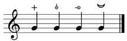
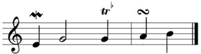

<!DOCTYPE html PUBLIC "-//W3C//DTD HTML 4.01//EN" "http://www.w3.org/TR/html4/strict.dtd">
<html>
<head>
  <meta http-equiv="Content-Type" content="text/html; charset=UTF-8">
  <meta http-equiv="Content-Style-Type" content="text/css">
  <title>GUIDO Additional Specifications</title>
  <meta name="Author" content="Samuel Brochot">

  <style type="text/css">
    BODY { font-family : verdana,Arial,Helvetica; font-size : 10pt; font-weight : normal; color: black; background-color: white; margin: 20px 40px 20px 40px;}
	h1	 { font-size : 31pt; font-weight : bold; padding: 0; line-height: 1.0; }
	h2	 { font-size : 18pt; font-weight : bold; letter-spacing: 1pt;}
	h3	 { font-size : 14pt; font-weight : bold; }
	h4	 { font-size : 12pt; font-weight : bold; margin-left: 50px}

	pre	 { font-family : Monaco, Courier; font-size : 8pt; margin-left: 50px; background-color: #E0D7CB; line-height: 2.0;}

	A:link    { color:#4561CA; text-decoration: none; }
	A:visited { color:#4561CA; text-decoration: none; }
	A:hover   { color:#990000; text-decoration: none; }

    p		 { margin-left: 50px; }
    p.notes  { font-style: italic; margin-left: 0px; }
    p.tag    { margin-left: 90px; text-indent: -40px}
    ul		 { margin-left: 100px; }
    
	span.tag { font-weight : bold; }
  </style>
</head>
<body>

<br />
<br />
<h1>The GUIDO Music Notation Format</h1>
<h2>Additionnal and new Specifications<br /></h2>
<p><span class="tag">Supported by the <a href="http://sourceforge.net/projects/guidolib/">GUIDO Engine</a> version 1.3.8</span><br />
<a href="http://www.grame.fr/Recherche/">Grame</a> - August 2009</p>
<br />
<br />
<hr />
<p><a href="#1.">1. Articulations</a>
<ul>
<li><a href="#1.1">1.1 Fermatas</a></li>
<li><a href="#1.2">1.2 Pizzicati</a></li>
<li><a href="#1.3">1.3 Staccato / staccatissimo</a></li>
<li><a href="#1.4">1.4 Harmonics</a></li>
</ul>

</p>
<p><a href="#2.">2. Ornaments</a>
<ul>
<li><a href="#2.1">2.1 Trill</a></li>
<li><a href="#2.2">2.2 Mordents</a></li>
<li><a href="#2.3">2.3 Turn</a></li>
</ul>
</p>

<hr />
<a name="1."></a><h3>1. Articulations</h3>

<a name="1.1"></a><h4>1.1 Fermatas</h4>
<p class="tag"><span class="tag">\fermata</span> indicates a fermata at the current metric position (for use between notes)</p>
<p class="tag"><span class="tag">\fermata</span>(<i>notes</i>) indicates fermatas for all <i>notes</i></p>
<p class="tag"><span class="tag">\fermata</span>&lt;type=<i>type</i>&gt;(<i>notes</i>) indicates <i>type </i>fermatas, where <i>type </i>can be one of the following:
<ul>
<li>"short" (a short fermata)</li>
<li>"long" (a long fermata)</li>
<li>"regular" (by default)</li>
</ul>
</p>

<p class="tag"><span class="tag">\fermata</span>&lt;<i>type&gt;</i>(<i>notes</i>) is a shorthand for \fermata&lt;type=<i>type</i>&gt;(<i>notes</i>)</p>
<p class="tag"><span class="tag">\fermata</span>&lt;position=<i>position</i>&gt;(notes) places fermatas on all <i>notes</i> according to <i>position </i>: "below" or "above" (by default)</p>

<p class="notes">Remarks:</p>
<p>The shorthand \fermata&lt;<i>type</i>&gt;(<i>notes</i>) is correct only if the "type" parameter is the only parameter specified or if it is the first one. This is true for all the shorthands stated in these specifications.</p>
</p>

<p class="notes">Examples:</p>
<pre>
[ \fermata<"short">(g) \fermata<position="below">(g) \fermata<"long">(g/2) \fermata(_/4) ]
</pre>
<center>  </center>


<a name="1.2"></a><h4>1.2 Pizzicati</h4>

<p class="tag"><span class="tag">\pizz</span>(<i>notes</i>) indicates a (left-hand) pizzicato for all <i>notes</i> </p>
<p class="tag"><span class="tag">\pizz</span>&lt;type=<i>type</i>&gt;(<i>notes</i>) indicates a <i>type </i>pizzicato 
for the <i>notes</i>, where <i>type </i>can be one of the following:
<ul>
<li>“lefthand" (a left-hand pizzicato, by default)</li>
<li>“buzz" (a buzz pizzicato)</li>
<li>“fingernail" (a fingernail pizzicato)</li>
<li>“snap" (a snap pizzicato)</li>
<li>“bartok" (same as the snap pizzicato)</li>
</ul>
</p>
<p>
<p class="tag"><span class="tag">\pizz</span>&lt;<i>type</i>&gt;(<i>notes</i>) is a shorthand for \pizz&lt;type=<i>type</i>&gt;(<i>notes</i>)</p>

<p class="notes">Examples:</p>
<pre>
 [ \pizz<type="lefthand">(g) \pizz<"snap">(g) \pizz<"buzz">(g) \pizz<"fingernail">(g) ]
</pre>
<center>  </center>


<a name="1.3"></a><h4>1.3 Staccato / staccatissimo</h4>

<p class="tag"><span class="tag">\stacc</span>(<i>notes</i>) indicates a staccato for all <i>notes</i></p>
<p class="tag"><span class="tag">\stacc</span>&lt;type=<i>type</i>&gt;(<i>notes</i>) indicates a <i>type </i>staccato for the <i>notes</i>, 
where <i>type</i> can be one of the following:
<ul>
<li>"heavy" (a staccatissimo)</li>
<li>"regular" (a staccato, by default) </li>
</ul>
</p>
<p class="tag"><span class="tag">\stacc</span>&lt;<i>type</i>&gt;(<i>notes</i>) is a shorthand for \stacc<type=<i>type</i>&gt;(<i>notes</i>)</p>

<p class="notes">Examples:</p>
<pre>
 [ \stacc(g# e b) ]      % staccato sequence
 [ \stacc<"heavy">(g) ]  % staccatissimo on a single note
</pre>
<center>  </center>


<a name="1.4"></a><h4>1.4 Harmonics</h4>

<p class="tag"><span class="tag">\harmonic</span>(<i>notes</i>) places a harmonic symbol above all the <i>notes</i></p>

<p class="notes">Examples:</p>
<pre>
[ \harmonic(c2 e&amp; g&amp;1 a) ] % harmonic sequence
</pre>
<center>  </center>


<a name="2."></a><h3>2. Ornaments</h3>
<p>
The formatting of ornaments is specified with chords ; each chord parameter has at least two notes, 
the main one (which will be drawn) and the auxiliary ones (which won't be drawn, but used to define the type of ornament desired). 
The ornament's accidental is determined according to one of the auxiliary notes' accidental and to the current key signature.
These ornaments have parameters in common:
</p>
<p class="tag"><span class="tag">\ornament</span>&lt;mode="cautionary"&gt;(<i>chords</i>) forces the drawing of each ornament's accidental, 
using cautionary accidental (enclosed in brackets) when necessary.</p>
<p class="tag"><span class="tag">\ornament</span>&lt;"cautionary"&gt;(<i>chords</i>) is a shorthand 
for <span class="tag">\ornament</span>&lt;mode="cautionary"&gt;(<i>chords</i>)</p>
<p class="tag"><span class="tag">\ornament</span>&lt;adx=<i>i</i>, ady=<i>j</i>&gt;(<i>chords</i>) applies an offset of i (horizontal) and j (vertical) to 
the ornament's accidental.
</p>


<a name="2.1"></a><h4>2.1 Trill</h4>
<p class="tag">
<span class="tag">\trill</span>(<i>chords</i>) places a trill on the first note of each chord. Each chord should have two voices which 
specify the main and auxiliary note. Upward and downward trills can be realised by specifying these notes accordingly. 
The chord should have one of these formats:
<ul>
<li>{c, d} : upward trill</li>
<li>{c, b} : downward trill</li>
</ul>
</p>
<p class="notes">Remarks:</p>
<p>
There is no specific symbol for downward trills.<br />
If only one note is specified in the chord, a default trill is placed upon this note.
</p>

<p class="notes">Examples:</p>
<pre>
[ \trill({g, a&amp;}) ]   % a trill on a single note
[ \trill({g, f} {a, b}) ]  % a sequence of upward trill and downward trill
</pre>
<center>  </center>

<a name="2.2"></a><h4>2.2 Mordents</h4>
<p  class="tag">
<span class="tag">\mord</span>(<i>chords</i>) places a mordent on the first note of each chord. Each chord should have 
two or three voices which specify the main and auxiliary notes. Standard and inverted mordents can be realised with 2 voices. 
The complex mordents (prallprall or prallmordent) need a third voice.
The chords should have one of these formats:
<ul>
<li>{c, d} : standard mordent</li>
<li>{c, b} : inverted mordent</li>
<li>{c, d, c} : prallprall</li>
<li>{c, b, c} : prallmordent</li>
</ul>
</p>

<p class="notes">Remarks:</p>
<p>If only one note is specified in the chord, a default mordent is placed upon this note<br />
In all cases, the mordent's accidental is determined according to the second note of the chord.
</p>

<p class="notes">Examples:</p>
<pre>
 [ \mord({g, a} {g, f} {g, a, g}) ] % a sequence of mordent, inverted mordent and 
 [ \mord<"cautionary">({c, d}) ]   % a mordent with cautionary accidentals
</pre>
<center>  </center>

<a name="2.3"></a><h4>2.3 Turn</h4>
<p class="tag">
<span class="tag">\turn</span>(<i>chords</i>) places a turn on the first note of each chord. 
Each chord should have three voices which specify respectively the main, the first and the second note of the ornament. 
Standard and "complex" (where the main note is the first to be played) turns can be realised by specifying these notes accordingly. 
The chords should have one of these formats:
<ul>
<li>{c, d, c} : standard turn</li>
<li>{c, b, c} : inverted turn</li>
<li>{c, c, d} : "complex" turn</li>
<li>{c, c, b} : inverted "complex" turn</li>
</ul>
</p>

<p class="notes">Remarks:</p>
<p>
if only one note is specified in the chord, a default turn is placed upon this note<br />
In case of a complex turn, the accidental is determined according to the third note's accidental. 
In the other case, it depends on the second note.
</p>

<p class="notes">Examples:</p>
<pre>
 [ \mord({e, d}) g/2 \trill({g/4, a&amp;}) | \turn({a/4, b, a}) b ]
</pre>
<center>  </center>

<hr />

<H4>Acknowledgements</H4>
<p>
We wish to thank Samuel Brochot for his efficient contribution
to the development of the GUIDO library release 1.38.
</p>

</body>
</html>
